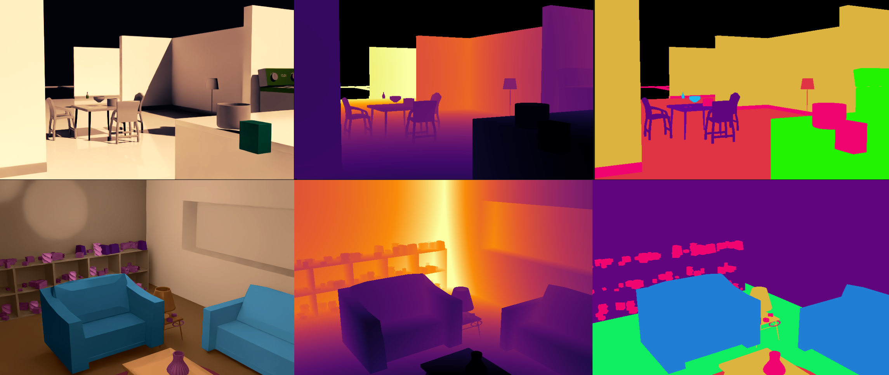

Mentorage rileva ciò che accade nella stanza senza trasformarla in un ambiente videosorvegliato.
Tecnologia Mentorage™
Come Mentorage™ capisce ciò che accade
Il sensore osserva l’ambiente, comprende la scena e riconosce i movimenti. L’intelligenza artificiale trasforma ciò che accade nella stanza in informazioni utili per chi assiste, rispettando la privacy delle persone.
Riconosce dove si trovano le persone e gli oggetti, misura le distanze e segue i movimenti nell’ambiente.
Capisce quando una persona si alza, cade, esce dalla stanza o permane a lungo in un determinato ambiente.
Una filiera completa
Dagli ambienti reali e sintetici ai dati per allenare l’AI.
Usiamo gli ambienti reali come scenari per il simulatore e costruiamo anche stanze completamente sintetiche. Così possiamo analizzare un numero molto ampio di ambienti, movimenti e dinamiche e generare i dati necessari per allenare e verificare i modelli.
-
01
Produciamo dati.
Da immagini, profondità, movimento e posizione ricaviamo dati che descrivono ambienti reali e sintetici.
-
02
Ricreiamo gli ambienti.
Usiamo gli ambienti reali come scenari per il simulatore e costruiamo anche stanze sintetiche, con oggetti e movimenti modificabili.
-
03
Alleniamo e verifichiamo l’AI.
Generiamo molti esempi e testiamo la risposta del modello in condizioni diverse.
Dalla scena al dato
L'AI guarda la scena in tre modi.
Per capire davvero una stanza servono più informazioni: l'immagine, la distanza e il tipo di elemento che si trova nello spazio.

Colori, luce, forme e dettagli dell'immagine.
La distanza tra le persone e gli oggetti.
Un modo per distinguere che cosa è ogni elemento.
Motion capture
Per capire un movimento, prima lo osserviamo.
Il motion capture descrive come si muove il corpo e trasferisce il movimento in un modello 3D. Così possiamo ricreare pose, percorsi e interazioni nell’ambiente virtuale e usarli per generare dati utili al training AI.
- Pose 3Dcome è posizionato il corpo
- Traiettoriecome si muove nello spazio
- Interazionicome entra in relazione con gli oggetti
Come alleniamo l'AI
Prima di lavorare sul campo, l'AI si allena.
Il nostro ambiente virtuale ricrea ambienti reali e ne costruisce di completamente sintetici, con spazi, oggetti e persone in movimento. Possiamo cambiare una dinamica, ripeterla e generare nuovi dati senza aspettare che accada di nuovo nel mondo reale.
Così l'AI impara in modo graduale e controllato, con esempi reali e sintetici, prima di essere verificata negli ambienti reali.
Digital twin
Creiamo una copia digitale dell’ambiente.
Ricostruiamo spazi, oggetti e distanze per avere un ambiente virtuale su cui lavorare.
Training simulator
Generiamo dati per molte situazioni.
Nel simulatore cambiamo movimenti, percorsi e condizioni per creare esempi utili al training AI.
Motion capture
Descriviamo come ci si muove.
Trasformiamo pose e movimenti in informazioni che il modello può usare per imparare.
Training simulator
Lo scenario è pronto. Ora mettiamo alla prova l'AI.
Il nostro ambiente virtuale è una macchina per generare dati di training. Usiamo ambienti reali ricreati nel simulatore e ne costruiamo anche di completamente sintetici: così possiamo cambiare movimenti e dinamiche, creare molti esempi e verificare la risposta del modello.
04
Simulare / ripetere / validare
Dal sensore all'alert
Dal dato a un messaggio chiaro.
Sensore, AI e software lavorano insieme per trasformare ciò che succede nell'ambiente in un'informazione utile al team.
Il sensore osserva
Raccoglie informazioni su presenza, posizione e movimento.
L'AI interpreta
Collega i segnali e riconosce i cambiamenti importanti.
Il team riceve
Mostra un alert chiaro, nel momento in cui può servire.
Dalla ricerca al campo
La ricerca diventa un aiuto concreto.
Ogni passaggio — ricreare, provare, osservare e verificare — aiuta Mentorage a capire meglio gli ambienti e a portare informazioni più utili a chi assiste.